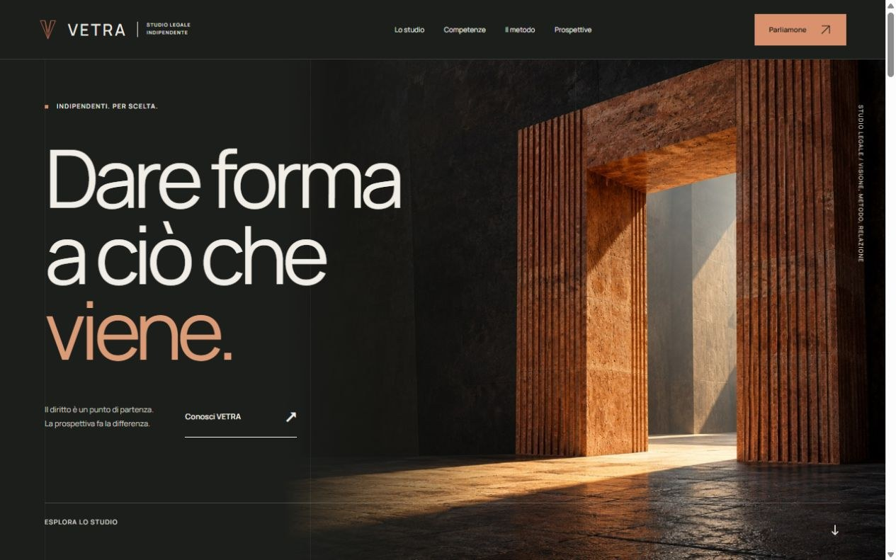
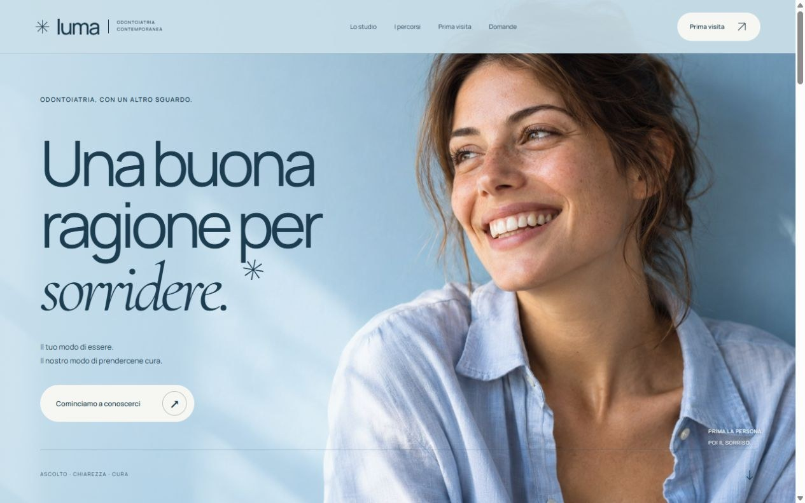
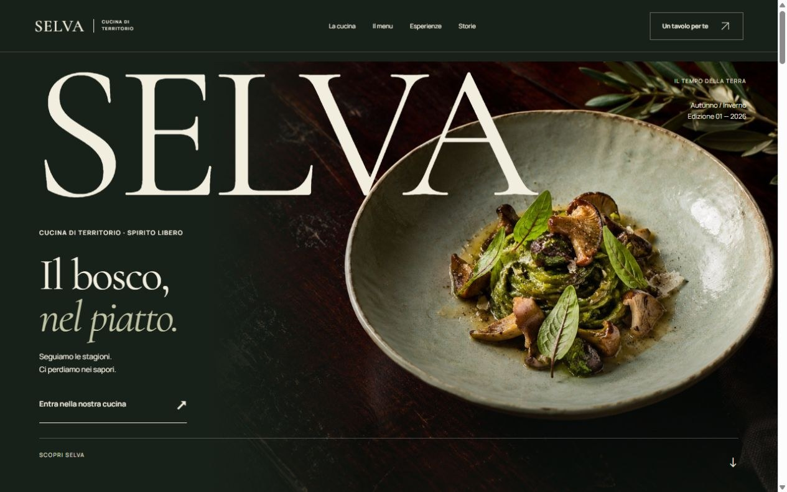

COLLEZIONE DI SITI CONCEPT / 02Un mondo diverso.
Un mondo diverso.
Per ogni identità.
Studio legale, studio dentistico, ristorante.
Tre progetti originali da esplorare.
Scegli il tuo punto di partenza.
01 / Studio legale10 pagine

Studio legale
VETRA
Architettura, chiarezza e prospettiva. Sei competenze, un metodo condiviso.
Esplora il sito02 / Studio dentistico7 pagine

Studio dentistico
LUMA
Una cura che parte dalla persona. Percorsi, prima visita e risposte, con calma.
Esplora il sito03 / Ristorante7 pagine

Ristorante
SELVA
La natura, a tavola. Cucina stagionale, esperienze e il piacere di rallentare.
Esplora il sito